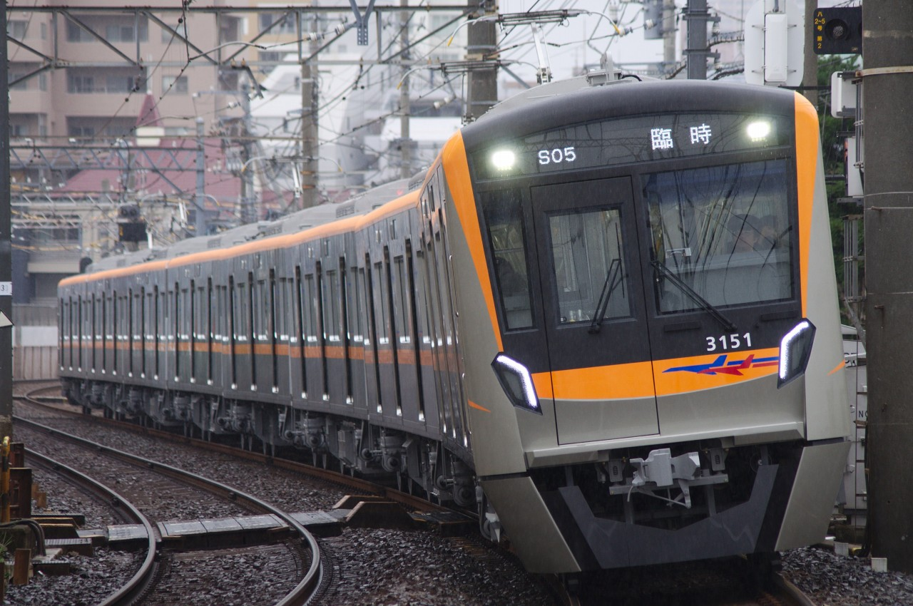
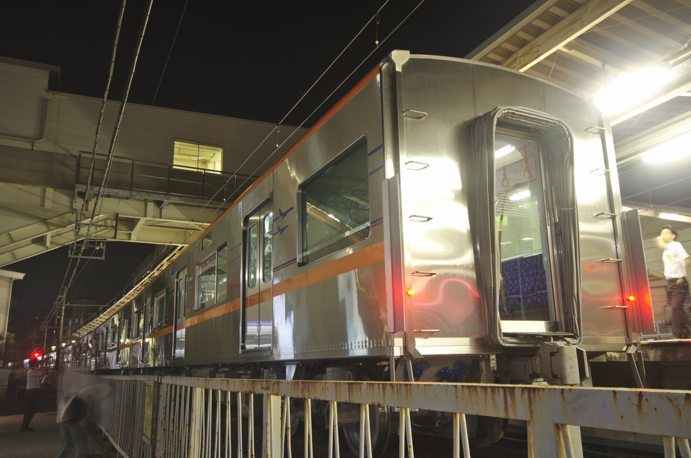
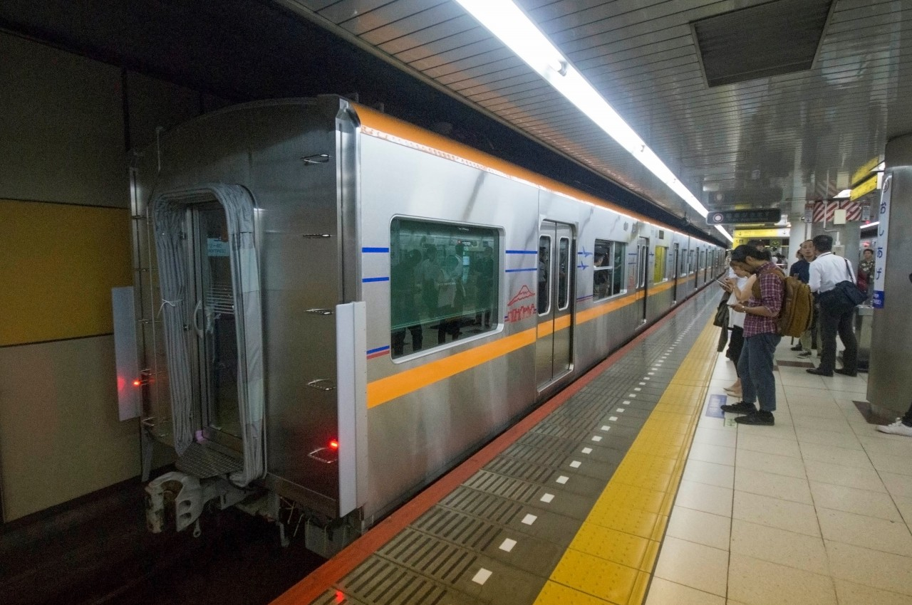

京成電鉄3100形
2019年に登場した京成電鉄の最新鋭車両。新京成電鉄との共同開発が行われ、新京成80000形は共通設計車両である。2019年現在、成田スカイアクセス線用の車両(3151-)のみ導入されており、
車体は成田スカイアクセスのラインカラーであるオレンジの帯を纏い、飛行機や日本の観光名所がデザインされている。なお、3000形のスカイアクセス用車両も同様のデザインに変更された。

八広-宗吾参道にて運転された「3100形乗車体験ツアー」
3151編成 @京成八幡-鬼越 (2019/10/14)

本線回送 1107K
3151編成 @船橋競馬場-谷津 (2019/12/10)
出場回送
3151,3152の2編成は総合車両製作所で3+3+2両に分割され、3668編成での牽引という形で出場回送が実施された。施行日は以下のとおりであった。
3152編成 2019/07/24-26
3151編成 2019/09/26-27,30

3152-3～3152-5 @市川真間 (2019/07/25)

3152-3～3152-5 @市川真間 (2019/07/25)

3152-1,3152-2 @押上 (2019/07/26)

3152-1,3152-2 @押上 (2019/07/26)